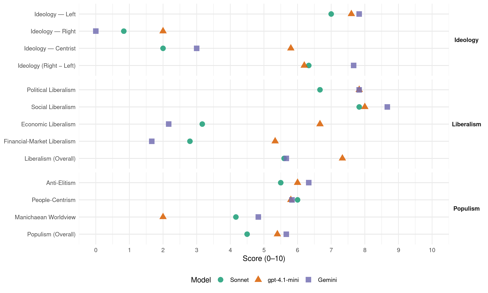

IU (Spain, 1993)
manifesto_id 33220_199306
Get full text: This site shows derived annotations and short verbatim quotes only. The full manifesto text is © Manifesto Project / WZB — obtain it via manifesto-project.wzb.eu using the manifesto_id above.
Headline scores
| Dimension | Sonnet | gpt-4.1-mini | Gemini |
|---|---|---|---|
| Populism (Overall) | 4.5 | 5.4 | 5.7 |
| Anti-Elitism | 5.5 | 6.0 | 6.3 |
| People-Centrism | 6.0 | 5.8 | 5.8 |
| Manichaean Worldview | 4.2 | 2.0 | 4.8 |
| Ideology (Right − Left) | 6.3 | 6.2 | 7.7 |
| Liberalism (Overall) | 5.6 | 7.3 | 5.7 |
| Political Liberalism | 6.7 | 7.8 | 7.8 |
| Social Liberalism | 7.8 | 8.0 | 8.7 |
| Economic Liberalism | 3.2 | 6.7 | 2.2 |
| Financial-Market Liberalism | 2.8 | 5.3 | 1.7 |
Evidence per dimension
Economic Liberalism
Gemini · score 2.0 · verified · chunk 1
“No creemos que los Servicios Sociales deban sujetarse a las omnipresentes leyes del mercado”
Hemos reservado para el final de este preámbulo el aspectomizás mas importante: LA APUESTA POR LO PÚBLICO ya que desde esta afirmación y solamente desde ella son viables las propuestas esbozadas mas arriba.No creemos que los Servicios Sociales deban sujetarse a las omnipresentes leyes del mercado que darían al traste con cualquier intento de situar a la Educación en una perspectiva progresista.
Gemini · score 2.0 · verified · chunk 2
“politicas económicas de libre mercado”
derechos fundamentales menos respetados en los modelos de sociedad en los que nos movemos. Las politicas económicas de libre mercado son reticentes
Gemini · score 2.0 · verified · chunk 3
“intervención democrática en las leyes del mercado”
en el marco de la potenciación de lo público, de la intervención democrática en las leyes del mercado, de la redistribución solidaria de la riqueza nacional
Gemini · score 3.0 · verified · chunk 4
“primacía del criterio de control y gestión pública”
A estos efectos IU propone: -Primacía del criterio de control y gestión pública de los servicios, sobre cualquier
Gemini · score 2.0 · verified · chunk 5
“intervención pública frente a los mecanismos de colonización”
cooperación con los pueblos que las comparten… intervención pública frente a los mecanismos de colonización cultural estadounidense
Gemini · score 2.0 · verified · chunk 6
“penalización fiscal de las viviendas desocupadas, que se destine una buena parte del suelo y los fondos publicos a la vivienda de promoción pública”
fomento de la politica de Alquiler de Viviendas, exigiendo junto a la derogación del Decreto Boyer y la penalización fiscal de las viviendas desocupadas, que se destine una buena parte del suelo y los fondos publicos a la vivienda de promoción pública, única a la que los
gpt-4.1-mini · score 7.0 · verified · chunk 1
“la política económica era equivocado, errático e injusto. Mientras, una situación de creciente desempleo, de cotas de precariedad, de recorte de prestaciones sociales”
Esta fuerza, política que hoy se dirige a los ciudadanos y ciudadanas para convocarlos desde la reflexión, la esperanza, la voluntad y la valentía moral, ha venido insistiendo, en estos años, en que el camino por el que transcurría la política económica era equivocado, errático e injusto. Mientras, una situación de creciente desempleo, de cotas de precariedad, de recorte de prestaciones sociales, de cierre continuado de empresas, de abandono de la producción agraria, etc, se hace cada día más ominosamente densa.
gpt-4.1-mini · score 7.0 · verified · chunk 2
“desarrollo de la formación profesional, adecuación del proyecto productivo estrechamente vinculado al desarrollo no dependiente y al entorno territorial”
Dicha integración requiere una clara definición de los objetivos educativos, en su conjunto, que permitan la adecuación del proyecto productivo estrechamente vinculado al desarrollo no dependiente y al entorno territorial, tanto dentro del contexto regional europeo como del contexto regional español (Nacionalidades históricas y regiones).
gpt-4.1-mini · score 7.0 · verified · chunk 3
“planificación democrática de la economía, una fiscalidad progresiva, políticas públicas activas”
Un Estado social, que garantice y promueva el progreso económico y social, la equidad y la solidaridad, corrigiendo los desequilibrios territoriales, a través de la planificación democrática de la economía, una fiscalidad progresiva, políticas públicas activas y la existencia de un sector público de bienes y servicios potente y eficaz.
gpt-4.1-mini · score 5.0 · verified · chunk 4
“la cuenta de resultados de las Administraciones Públicas no es sólo económica, sino fundamentalmente social”
…la cuenta de resultados de las Administraciones Públicas no es sólo económica, sino fundamentalmente social, por lo cual no deben prevalecer nunca los criterios economicistas en las decisiones sobre modos o fórmulas de gestión…
gpt-4.1-mini · score 7.0 · verified · chunk 5
“superando los actuales criterios monetaristas y neoliberales de la unión económica y monetaria”
trabajar por dar a la CE un contenido social progresista, superando los actuales criterios monetaristas y neoliberales de la unión económica y monetaria, poniendo en primer plano la defensa y desarrollo de las conquistas sociales de los trabajadores en los diversos países europeos;
gpt-4.1-mini · score 7.0 · verified · chunk 6
“mercado de vivienda protegida”
La recuperación de estos estratos de población para el mercado de vivienda protegida - una vez expulsados por la nefasta politica economica gubernamental del mercado de la vivienda libre- esta significando, la practica de la imposibilidad absoluta de acceso a la vivienda para ese 40% de demanda efectiva que ingresa por debajo de dos veces el SMI, caso en el que está la mayoria de los jovenes.
Sonnet · score 3.0 · verified · chunk 1
“Servicios Sociales deban sujetarse a las omnipresentes leyes del mercado”
No creemos que los Servicios Sociales deban sujetarse a las omnipresentes leyes del mercado que darían al traste con cualquier intento
Sonnet · score 3.0 · verified · chunk 2
“criterios RESTRICTIVOS EN LOS CONCIERTOS”
Propugnamos la aplicación de criterios RESTRICTIVOS EN LOS CONCIERTOS EDUCATIVOS, supeditando la concesión de éstos
Sonnet · score 3.0 · verified · chunk 3
“IU SE OPONDRÁ FRONTALMENTE A LAS PRIVATIZACIONES”
rechazando las posturas neoliberales que propugna el desprestigio de lo público, su reducción y privatización. I.U. SE OPONDRÁ FRONTALMENTE A LAS PRIVATIZACIONES
Sonnet · score 3.0 · verified · chunk 4
“rechazamos cualquier política de privatización”
Izquierda Unida defiende la necesidad de que sea el Estado…el encargado de gestionar los centros penitenciarios…Por tanto rechazamos cualquier política de privatización de las prisiones
Sonnet · score 4.0 · verified · chunk 5
“potenciando la máxima transparencia del mercado”
para la desaparición de los canales de difusión de carácter parasitario y oligopólico, potenciando la máxima transparencia del mercado
Sonnet · score 3.0 · verified · chunk 6
“pais de libre mercado como el nuestro”
en un pais de libre mercado como el nuestro para una intervención adecuada que resuelva el problema de la vivienda.
Financial-Market Liberalism
Gemini · score 1.0 · verified · chunk 3
“derogación del secreto bancario y control del blanqueo”
A. LUCHA CONTRA EL NARCOTRÁFICO: -control de capitales y grandes movimientos de capital -derogación del secreto bancario y control del blanqueo de dinero proveniente del tráfico de drogas.
Gemini · score 1.0 · verified · chunk 5
“superando los actuales criterios monetaristas y neoliberales”
trabajar por dar a la CE un contenido social progresista, superando los actuales criterios monetaristas y neoliberales de la unión económica y monetaria
Gemini · score 3.0 · verified · chunk 6
“facilitar el acceso a créditos con un interés subvencionado”
bancarios, prioritariamente del sector público y las Cajas de Ahorro para facilitar el acceso a créditos con un interés subvencionado y facilidades para amortizar el capital.
gpt-4.1-mini · score 3.0 · verified · chunk 1
“la privatización se manifiesta mediante las subcontrataciones de servicios y de la política de constitución de Fundaciones y Sociedades Anónimas”
b)A nuestra manera de ver se ha ido paulatinamente a una PRIVATIZACIÓN ENCUBIERTA de nuestras Universidades públicas a través de los recursos materiales y humanos debido a la PERVERSIÓN en la aplicación de los convenios del artículo 11, titulaciones propias…Asimismo esta privatización se manifiesta mediante las subcontrataciones de servicios y de la política de constitución de Fundaciones y Sociedades Anónimas.
gpt-4.1-mini · score 6.0 · verified · chunk 3
“control de capitales y grandes movimientos de capital -derogación del secreto bancario”
A. LUCHA CONTRA EL NARCOTRÁFICO: -control de capitales y grandes movimientos de capital -derogación del secreto bancario y control del blanqueo de dinero proveniente del tráfico de drogas.
gpt-4.1-mini · score 7.0 · verified · chunk 6
“acceder a créditos con un interés subvencionado”
Las Administraciones Públicas llegarán a acuerdos con las entes bancarios, prioritariamente del sector público y las Cajas de Ahorro para facilitar el acceso a créditos con un interés subvencionado y facilidades para amortizar el capital.
Sonnet · score 3.0 · verified · chunk 1
“impuesto finalista sobre la energía”
Se propone la creación de: Un impuesto finalista sobre la energía que al depender del impacto medioambiental del tipo de energía permita reorientar su consumo
Sonnet · score 2.0 · verified · chunk 2
“políticas económicas de libre mercado”
Las politicas económicas de libre mercado son reticentes, por principio, a la aplicación de medidas de protección eficaz
Sonnet · score 2.0 · verified · chunk 3
“control de capitales y grandes movimientos de capital”
LUCHA CONTRA EL NARCOTRÁFICO: -control de capitales y grandes movimientos de capital -derogación del secreto bancario
Sonnet · score 4.0 · verified · chunk 5
“créditos blandos condicionados a la compra de armas”
Nos referimos por ejemplo a los ‘créditos blandos’ condicionados a la compra de armas por parte de los países pobres
Sonnet · score 3.0 · verified · chunk 6
“créditos con un interés subvencionado”
para facilitar el acceso a créditos con un interés subvencionado y facilidades para amortizar el capital.
Political Liberalism
Gemini · score 8.0 · verified · chunk 1
“consecución del Estado Social y democrático de Derecho”
En una creciente espiral de irracionalidad y de encantamiento, el discurso oficial y sus corifeos asimilaron la consecución del Estado Social y democrático de Derecho a las cifras de la macroeconomía, olvidando las necesidades reales, concretas, personales e inmediatas de vivienda, trabajo, salud, transporte público, cultural y valores de humanización.
Gemini · score 8.0 · verified · chunk 2
“principios de democracia y transparencia”
ORGANIZACIÓN DE LA UNIVERSIDAD debe basarse en los principios de democracia y transparencia: -Los ÓRGANOS
Gemini · score 8.0 · verified · chunk 3
“democratización y acercamiento de las Instituciones al ciudadano”
prioritario la adopción de medidas urgentes, que tengan por objetivo la democratización y acercamiento de las Instituciones al ciudadano, la potenciación de la independencia de los tres
Gemini · score 8.0 · verified · chunk 4
“fortalecimiento de las instituciones democráticas”
La transformación de la sociedad lleva implícito el fortalecimiento de las instituciones democráticas, con especial protección al desarrollo
Gemini · score 8.0 · verified · chunk 5
“dotando al Parlamento Europeo de plenos poderes”
proponer la superación del déficit democrático de la CE, dotando al Parlamento Europeo de plenos poderes de legislación y control
Gemini · score 7.0 · verified · chunk 6
“El Parlamento es la institución del Estado que representa la soberanía popular”
programa de juventud de IU es la alternativa de los jóvenes, hecho por jóvenes y para jóvenes. El Parlamento es la institución del Estado que representa la soberanía popular y que debe estar en contacto
gpt-4.1-mini · score 8.0 · verified · chunk 1
“la Constitución Española que ha venido a revisar el tradicional régimen jurídico administrativo centralista de la Universidad, al reconocer en el n? 10 de su artículo 27 la autonomía de las Universidades”
Desde su fundación en , muchas han sido las concepciones que de la Universidad se han tenido y muy variadas las demandas que la Sociedad la requería, en relación estrecha con la evolución de la misma. Pero nosotros no nos vamos a ir tan lejos, nos vamos a situar en el marco actual que no es otro que el que da comienzo en 1.983 con la promulgación de la Ley de Reforma Universitaria , su aplicación y desarrollo así como su intento de reforma recientemente intentado en la Ley de Actualización de la LRU, pendiente de aprobación en el Parlamento tras la disolución de las Cortes. En relación a la LRU no podemos por menos de hacer nuestras algunas de las frases que constituyen su preámbulo en el que se puede leer: “El desarrollo científico, la formación profesional y la extensión de la cultura son tres funciones básicas que de cara al siglo XXI debe cumplir esa vieja y hoy renovada institución social que es la Universidad española(……..). Es objetivo de la LRU conseguir unos Centros universitarios donde arraiguen el pensamiento libre y crítico y la investigación. Solo así la institución universitaria podrá ser un instrumento eficaz de transformación social, al servicio de la libertad, la igualdad y el progreso social para hacerse posible una realización mas plena de la dignidad humana” Dentro del marco del citado preámbulo se pueden ir desgranando uno por uno los objetivos que persigue tan ambicioso proyecto: a.La incorporación de España a las sociedades avanzadas pasa necesariamente por su plena incorporación al mundo de la ciencia moderna, de la que diversos avatares históricos la separaron casi desde sus comienzos. b.Es necesario dar una respuesta a la creciente demanda de estudiantes que exigen un lugar en las aulas. c.Dentro del marco de la previsible incorporación de España al área universitaria europea hay que prever una mayor movilidad de españoles y extranjeros. d.Hay que dar cumplimiento a la Constitución Española que ha venido a revisar el tradicional régimen jurídico administrativo centralista de la Universidad, al reconocer en el n? 10 de su artículo 27 la autonomía de las Universidades. Esta autonomía ha de manifestarse en : autonomía estatutaria, autonomía académica o de planes de estudio, autonomía financiera y de gestión de sus recursos, así como en la capacidad de seleccionar y promocionar al profesorado así como al resto del personal dentro del respeto de los principios de méritos, publicidad y no discriminación que debe regir la provisión de todo puesto de trabajo en la esfera de lo público. e.La Universidad no es patrimonio exclusivo de los miembros de la comunidad universitaria, sino que constituye un auténtico servicio público referido a los intereses generales que toda la comunidad nacional y de sus respectivas CC AA. A ese fin se crea la figura del Consejo Social, garante de las adecuadas relaciones Universidad-Sociedad. f.De acuerdo con el doble cometido docente e investigador, se potencia la estructura departamental de las Universidades españolas en orden a conseguir la formación de equipos investigadores así como una notable flexibilización de los curriculum que puedan ser ofertados. g.Se pretende una simplificación del “actual caos de la selvática e irracional estructura jerárquica del profesorado totalmente disfuncional”….. citamos frases textuales…..mediante la simplificación de las escalas profesorales y el establecimiento de una carrera docente. h.Se pretende una deshomogeneización de las Universidades en orden a conseguir una competencia entre las mismas para alcanzar cotas mas elevadas en calidad docente e investigadora. Hasta aquí el ESPÍRITU de la Reforma universitaria, después vino la LETRA y a continuación la PUESTA EN PRÁCTICA de estos principios. Ha pasado casi una década de su promulgación y nos encontramos en condiciones de hacer un análisis crítico de la aplicación de la Ley y es en este campo donde queremos poner sobre la mesa algunos interrogantes, plantear algunos puntos de reflexión y plantear en positivo algunas alternativas a estos problemas. Nos referimos a aspectos como: Financiación: a)El porcentaje del PIB destinado a dotaciones a la Universidad es claramente insuficiente y muy alejado de la media de nuestro entorno comunitario. b)A nuestra manera de ver se ha ido paulatinamente a una PRIVATIZACIÓN ENCUBIERTA de nuestras Universidades públicas a través de los recursos materiales y humanos debido a la PERVERSIÓN en la aplicación de los convenios del artículo 11, titulaciones propias…Asimismo esta privatización se manifiesta mediante las subcontrataciones de servicios y de la política de constitución de Fundaciones y Sociedades Anónimas. c)Se va a una política de TASAS UNIVERSITARIAS que tiende “doctrina Maravall” a acercar las mismas al coste real de la plaza. d)Las BECAS Y AYUDAS SOCIALES son insuficientes y a menudo llegan tarde. e) No se contemplan partidas especiales que posibiliten una puesta en marcha digna de las NUEVAS TITULACIONES. Con la Ley de Reforma de la LRU se ha perdido una ocasión muy importante para avanzar en la Autonomía universitaria profundizando en la misma y en la responsabilización de su trabajo ante la Sociedad. Es necesario un profundo debate social que conduzca a una drástica reforma del SISTEMA DE ACCESO a la Universidad. La elaboración y puesta en marcha de los PLANES DE ESTUDIOS se debe regir por criterios que tengan en cuenta el valor académico y social de los contenidos así como su homologación con los del resto de Europa,fomentando la participación en cuanto a las propuestas emanadas de la Sociedad. *Se debe definir y dotar económicamente de mas medios a la INVESTIGACIÓN. Hay importantes DEFICITS DEMOCRÁTICOS en las estructuras de gobierno universitario: Claustros, Consejo de Universidades, Consejos Sociales, comisiones de selección y de reglamentos….
gpt-4.1-mini · score 8.0 · verified · chunk 2
“democracia y transparencia: -Los ÓRGANOS DE GOBIERNO de la Universidad (colegiados) tendrán una composición que garantice un 50% DE PROFESORES, UN 30% DE ESTUDIANTES Y UN 15% DE PAS”
La ORGANIZACIÓN DE LA UNIVERSIDAD debe basarse en los principios de democracia y transparencia: -Los ÓRGANOS DE GOBIERNO de la Universidad (colegiados) tendrán una composición que garantice un 50% DE PROFESORES, UN 30% DE ESTUDIANTES Y UN 15% DE PAS. -El CONSEJO SOCIAL aprueba los presupuestos en la Universidad y es responsable de la transparencia en la gestión para lo que se le dotará de los medios necesarios.
gpt-4.1-mini · score 8.0 · verified · chunk 3
“democratización y acercamiento de las Instituciones al ciudadano”
IZQUIERDA UNIDA considera prioritario la adopción de medidas urgentes, que tengan por objetivo la democratización y acercamiento de las Instituciones al ciudadano, la potenciación de la independencia de los tres poderes del Estado (ejecutivo, legislativo y judicial)
gpt-4.1-mini · score 7.0 · verified · chunk 4
“fortalecimiento de las instituciones democráticas, con especial protección al desarrollo de las libertades y derechos de los ciudadanos”
…La transformación de la sociedad lleva implícito el fortalecimiento de las instituciones democráticas, con especial protección al desarrollo de las libertades y derechos de los ciudadanos…
gpt-4.1-mini · score 8.0 · verified · chunk 5
“dotando al Parlamento Europeo de plenos poderes de legislación y control”
proponer la superación del déficit democrático de la CE, dotando al Parlamento Europeo de plenos poderes de legislación y control en su ámbito; el Parlamento español ejercerá un control efectivo sobre la actuación de nuestro Gobierno en las diferentes instancias comunitarias;
gpt-4.1-mini · score 8.0 · verified · chunk 6
“El Parlamento es la institución del Estado que representa la soberanía popular”
El Parlamento es la institución del Estado que representa la soberanía popular y que debe estar en contacto directo con los ciudadanos. Es por ello para IU la mejor oportunidad de superar la división entre gobernantes, gestores de las políticas, y los gobernados, a los que va dirigida la política.
Sonnet · score 6.0 · verified · chunk 1
“fomento de los hábitos democráticos, participativos”
el papel que puede jugar la Educación en la compensación de situaciones socio-económicas desfavorables, en el fomento de los hábitos democráticos, participativos
Sonnet · score 7.0 · verified · chunk 2
“democracia y transparencia”
LA ORGANIZACIÓN DE LA UNIVERSIDAD debe basarse en los principios de democracia y transparencia
Sonnet · score 6.0 · verified · chunk 3
“independencia de los tres poderes del Estado”
la potenciación de la independencia de los tres poderes del Estado (ejecutivo, legislativo y judicial)
Sonnet · score 8.0 · verified · chunk 4
“fortalecimiento de las instituciones democráticas”
La transformación de la sociedad lleva implícito el fortalecimiento de las instituciones democráticas, con especial protección al desarrollo de las libertades y derechos de los ciudadanos
Sonnet · score 7.0 · verified · chunk 5
“proponer una profunda democrática de la ONU”
proponer una profunda democrática de la ONU, que elimine el derecho de veto de los miembros permanentes del Consejo de Seguridad
Sonnet · score 6.0 · verified · chunk 6
“El Parlamento es la institución del Estado que representa la soberanía popular”
El Parlamento es la institución del Estado que representa la soberanía popular y que debe estar en contacto directo con los ciudadanos.
Liberalism (Overall)
Gemini · score 6.0 · verified · chunk 1
“consecución del Estado Social y democrático de Derecho”
En una creciente espiral de irracionalidad y de encantamiento, el discurso oficial y sus corifeos asimilaron la consecución del Estado Social y democrático de Derecho a las cifras de la macroeconomía, olvidando las necesidades reales, concretas, personales e inmediatas de vivienda, trabajo, salud, transporte público, cultural y valores de humanización.
Gemini · score 6.0 · verified · chunk 2
“principios de democracia y transparencia”
ORGANIZACIÓN DE LA UNIVERSIDAD debe basarse en los principios de democracia y transparencia: -Los ÓRGANOS
Gemini · score 5.0 · verified · chunk 3
“democratización y acercamiento de las Instituciones al ciudadano”
prioritario la adopción de medidas urgentes, que tengan por objetivo la democratización y acercamiento de las Instituciones al ciudadano, la potenciación de la independencia de los tres
Gemini · score 7.0 · verified · chunk 4
“fortalecimiento de las instituciones democráticas”
La transformación de la sociedad lleva implícito el fortalecimiento de las instituciones democráticas, con especial protección al desarrollo
Gemini · score 5.0 · verified · chunk 5
“dotando al Parlamento Europeo de plenos poderes”
proponer la superación del déficit democrático de la CE, dotando al Parlamento Europeo de plenos poderes de legislación y control
Gemini · score 5.0 · verified · chunk 6
“El Parlamento es la institución del Estado que representa la soberanía popular”
programa de juventud de IU es la alternativa de los jóvenes, hecho por jóvenes y para jóvenes. El Parlamento es la institución del Estado que representa la soberanía popular y que debe estar en contacto
gpt-4.1-mini · score 7.0 · verified · chunk 1
“principios de NO-SEXISMO,EDUCACIÓN PARA LA PAZ, respeto y cuidado del MEDIO AMBIENTE”
(1)FOMENTO DE LA CREATIVIDAD, REFLEXIÓN, ESPÍRITU CRÍTICO e INVESTIGADOR en un marco de estímulo de las técnicas de trabajo en grupo. (2)Factor de COMPENSACIÓN DE LAS DESIGUALDADES SOCIALES de origen en base, sobre todo a las primeras etapas del sistema educativo. (3)Principios de NO-SEXISMO,EDUCACIÓN PARA LA PAZ, respeto y cuidado del MEDIO AMBIENTE…. (ver Programa de Ecología). (4)Principio de la INTEGRACIÓN SOCIAL de las minorías: minusvalías psíquicas y físicas, etnias, creencias religiosas. (5)Apertura total del sistema educativo a la educación permanente de las PERSONAS ADULTAS. (6)Principio de multa culturalidad entendido en su doble vertiente de la aceptación y el respeto a las minorías étnicas así como a la integración de sus valores culturales y tradicionales en la nuestra propia,siempre y cuando no colisionen con los derechos humanos. (7)La Escuela como foco de irradiación de valores ÉTICOS, SOLIDARIOS y de respeto hacia los valores de LIBERTAD y JUSTICIA.
gpt-4.1-mini · score 7.0 · verified · chunk 2
“democracia y transparencia: -Los ÓRGANOS DE GOBIERNO de la Universidad (colegiados) tendrán una composición que garantice un 50% DE PROFESORES, UN 30% DE ESTUDIANTES Y UN 15% DE PAS”
La ORGANIZACIÓN DE LA UNIVERSIDAD debe basarse en los principios de democracia y transparencia: -Los ÓRGANOS DE GOBIERNO de la Universidad (colegiados) tendrán una composición que garantice un 50% DE PROFESORES, UN 30% DE ESTUDIANTES Y UN 15% DE PAS. -El CONSEJO SOCIAL aprueba los presupuestos en la Universidad y es responsable de la transparencia en la gestión para lo que se le dotará de los medios necesarios.
gpt-4.1-mini · score 7.0 · verified · chunk 3
“democratización y acercamiento de las Instituciones al ciudadano”
IZQUIERDA UNIDA considera prioritario la adopción de medidas urgentes, que tengan por objetivo la democratización y acercamiento de las Instituciones al ciudadano, la potenciación de la independencia de los tres poderes del Estado (ejecutivo, legislativo y judicial)
gpt-4.1-mini · score 7.0 · verified · chunk 4
“fortalecimiento de las instituciones democráticas, con especial protección al desarrollo de las libertades y derechos de los ciudadanos”
…La transformación de la sociedad lleva implícito el fortalecimiento de las instituciones democráticas, con especial protección al desarrollo de las libertades y derechos de los ciudadanos…
gpt-4.1-mini · score 8.0 · verified · chunk 5
“dotando al Parlamento Europeo de plenos poderes de legislación y control”
proponer la superación del déficit democrático de la CE, dotando al Parlamento Europeo de plenos poderes de legislación y control en su ámbito; el Parlamento español ejercerá un control efectivo sobre la actuación de nuestro Gobierno en las diferentes instancias comunitarias;
gpt-4.1-mini · score 8.0 · verified · chunk 6
“El Parlamento es la institución del Estado que representa la soberanía popular”
El Parlamento es la institución del Estado que representa la soberanía popular y que debe estar en contacto directo con los ciudadanos. Es por ello para IU la mejor oportunidad de superar la división entre gobernantes, gestores de las políticas, y los gobernados, a los que va dirigida la política.
Sonnet · score 5.0 · verified · chunk 1
“igualdad de oportunidades para las mujeres”
la igualdad de oportunidades para las mujeres y el reparto de responsabilidades familiares y domésticas entre hombres y mujeres
Sonnet · score 5.0 · verified · chunk 2
“democracia y transparencia”
LA ORGANIZACIÓN DE LA UNIVERSIDAD debe basarse en los principios de democracia y transparencia
Sonnet · score 5.0 · mixed · chunk 3
“intervención democrática en las leyes del mercado”
de la intervención democrática en las leyes del mercado, de la redistribución solidaria de la riqueza nacional
Sonnet · score 7.0 · verified · chunk 4
“libertades nacen de las personas y ningún gobierno tiene la facultad de limitarlas”
presidido por la idea fuerza de que las libertades nacen de las personas y ningún gobierno tiene la facultad de limitarlas, sino de facilitarlas y promoverlas
Sonnet · score 6.0 · verified · chunk 5
“defensa de los derechos humanos considerados integralmente”
defender el cumplimiento de cuantos tratados internacionales supongan una defensa de los derechos humanos considerados integralmente
Sonnet · score 5.0 · verified · chunk 6
“democracia radical y justicia social”
que compartan los planteamientos de democracia radical y justicia social, que son los motores de nuestra acción política.
Anti-Elitism
Gemini · score 6.0 · verified · chunk 1
“individualismo e insolidaridad, emanados de las clases dirigentes”
Desaparición de las redes de solidaridad familiar y vecinal. -Degradación en el mundo de los valores: individualismo e insolidaridad, emanados de las clases dirigentes, con el fiel reflejo en nuestro medios audiovisuales.
Gemini · score 6.0 · verified · chunk 2
“política fomentada desde el poder”
achacamos a la política fomentada desde el poder en los últimos años tendente a propiciar
Gemini · score 7.0 · verified · chunk 3
“la conducta seguida por la Administración Laboral ha sido la de engañar”
CEE y la OIT. Por el contrario, la conducta seguida por la Administración Laboral ha sido la de engañar reiteradamente a los sindicatos, los cuales haciendo
Gemini · score 6.0 · verified · chunk 4
“política autoritaria, de recorte de libertades”
El Gobierno del PSOE ha optado por una política autoritaria, de recorte de libertades fundamentales y de ataque a los derechos humanos
Gemini · score 6.0 · verified · chunk 5
“alejadas de los intereses comerciales y gubernamentales”
apostamos por un completo cambio de rumbo de las televisiones públicas, alejadas de los intereses comerciales y gubernamentales, y con un decidido propósito
Gemini · score 7.0 · verified · chunk 6
“separación entre gobernantes y gobernados, entre políticos y ciudadanos”
ordinario de las formas políticas, muy similares entre sí, basadas en la separación entre gobernantes y gobernados, entre políticos y ciudadanos, suponene un cada vez mayor distanciamiento
gpt-4.1-mini · score 7.0 · verified · chunk 1
“la interesada atmósfera de autocomplacencias y triunfalismos de un discurso que, emitido por el Gobierno”
La sociedad española ha recibido en unos meses los impactos de unos hechos, unos datos y unas cifras que conforman una situación, difícil para la mayoría e inesperada para muchos. Esta situación abruma, no sólo por la entidad de los problemas en presencia, sino también por el brusco contraste entre esta realidad y la interesada atmósfera de autocomplacencias y triunfalismos de un discurso que, emitido por el Gobierno, ha tenido como amplificadores e intelectuales orgánicos a plataformas políticas, sociales, culturales y de opinión.
gpt-4.1-mini · score 6.0 · verified · chunk 2
“la política fomentada desde el poder en los últimos años tendente a propiciar una SOCIEDAD DESVERTEBRADA”
Partimos de la escasa participación en los mismos lo cual achacamos a la política fomentada desde el poder en los últimos años tendente a propiciar una SOCIEDAD DESVERTEBRADA y poco participativa en general, a la FRUSTRACIÓN generada por la poca efectividad de los Consejos Escolares y la falta de competencias de los mismos
gpt-4.1-mini · score 7.0 · verified · chunk 3
“se sataniza al Estado y”lo público”, atribuyéndole todo tipo de males”
Se sataniza al Estado y “lo público”, atribuyéndole todo tipo de males y se sacraliza el mercado, promoviéndose políticas liberalizadoras y privatizadoras de lo público.
gpt-4.1-mini · score 4.0 · verified · chunk 4
“El Gobierno del PSOE ha querido primar los centros urbanos con gran concentración de población”
…la Planta Judicial muestra que el Gobierno del PSOE ha querido primar los centros urbanos con gran concentración de población, y, por lo tanto, mayor peso político en unas elecciones, sobre los núcleos rurales.
gpt-4.1-mini · score 6.0 · verified · chunk 5
“la concentración, uniformidad y mercantilización degradante de la comunicación”
Ante la creciente concentración, uniformidad y mercantilización degradante de la comunicación y la cultura, regidas únicamente por el valor de cambio, se impone también para IU, la necesidad de elaborar una política alternativa de comunicación y cultura.
Sonnet · score 6.0 · verified · chunk 1
“discurso oficial y sus corifeos”
el discurso oficial y sus corifeos asimilaron la consecución del Estado Social y democrático de Derecho a las cifras de la macroeconomía
Sonnet · score 4.0 · verified · chunk 2
“grupos socialmente hegemónicos”
INDEPENDIENTE de los intereses de los grupos socialmente hegemónicos que garantice la libertad de expresión
Sonnet · score 7.0 · verified · chunk 3
“tradicionales centros de poder financiero”
situaba a la llamada clase empresarial y a los tradicionales centros de poder financiero, como los auténticos sujetos activos del cambio social
Sonnet · score 5.0 · verified · chunk 4
“responsabilidad del PSOE, que en 10 años de gobierno”
así como la responsabilidad del PSOE, que en 10 años de gobierno, no ha llevado a cabo la Reforma prometida en sus programas electorales
Sonnet · score 6.0 · verified · chunk 5
“concentración, uniformidad y mercantilización degradante”
Ante la creciente concentración, uniformidad y mercantilización degradante de la comunicación y la cultura, regidas únicamente por el valor de cambio
Sonnet · score 5.0 · verified · chunk 6
“la política se hará contra nosotros y nuestros intereses”
Porque si entre todos y todas no hacemos política, la política se hará contra nosotros y nuestros intereses, como hasta ahora.
Ideology — Centrist
Gemini · score 3.0 · verified · chunk 2
“fomento de la participación”
gestión mas eficaz de los recursos y fomento de la participación de los sectores educativos
gpt-4.1-mini · score 7.0 · verified · chunk 1
“convocamos a la sociedad española y a sus sectores y colectivos con mayor dinamismo y voluntad”
Por eso, convocamos a la sociedad española y a sus sectores y colectivos con mayor dinamismo y voluntad. Nuestro papel será el de poner nuestro mejor trabajo, nuestras propuestas, nuestra organización y nuestra voluntad.
gpt-4.1-mini · score 6.0 · verified · chunk 2
“participación activa, sin prevalecer el principio de autoridad”
Este análisis, en el que se prima la cooperación y participación activa, sin prevalecer el principio de autoridad, ni los intereses de unos sectores sobre otros, contrapone nuestro modelo a la escuela tradicional, que estaba hecha y dirigida exclusivamente por los enseñantes..
gpt-4.1-mini · score 6.0 · verified · chunk 3
“Las Cortes Generales representan al pueblo español”
Las Cortes Generales representan al pueblo español y están formadas por el Congreso de los Diputados y el Senado” (artículo 66.1 de la Constitución Española), ejercen la potestad legislativa del Estado, aprueban sus presupuestos, controlan la acción del Gobierno
gpt-4.1-mini · score 4.0 · verified · chunk 4
“la participación de los ciudadanos y ciudadanas y a las fuerzas políticas la necesidad de ir hacia un PACTO POR LA ÉTICA CONTRA LA CORRUPCIÓN”
…la participación de los ciudadanos y ciudadanas y a las fuerzas políticas la necesidad de ir hacia un PACTO POR LA ÉTICA CONTRA LA CORRUPCIÓN para que en todas las Instituciones y Administraciones se articulen los mecanismos necesarios…
gpt-4.1-mini · score 6.0 · verified · chunk 5
“la participación de la ciudadanía organizada; sólo los pueblos que tienen conciencia”
El objetivo de la izquierda no es gestionar el poder, es la transformación social, y sólo se transforma con la participación de la ciudadanía organizada; sólo los pueblos que tienen conciencia llevan adelante los cambios que la izquierda transformadora propone.
Sonnet · score 2.0 · verified · chunk 1
“propuestas a la misma están ligadas por fuerza”
nuestra convocatoria a la sociedad española y nuestras propuestas a la misma están ligadas por fuerza, por necesidad de los hechos
Sonnet · score 2.0 · verified · chunk 2
“participación activa”
Este análisis, en el que se prima la cooperación y participación activa, sin prevalecer el principio de autoridad
Sonnet · score 2.0 · verified · chunk 3
“sin que se excluyan a priori ninguna solución”
REALIZACIÓN DE UN GRAN DEBATE EN EL MARCO NACIONAL E INTERNACIONAL, EN EL QUE NO SE EXCLUYAN A PRIORI NINGUNA SOLUCIÓN
Sonnet · score 2.0 · verified · chunk 4
“PACTO POR LA ÉTICA CONTRA LA CORRUPCIÓN”
planteemos a los ciudadanos y ciudadanas y a la fuerzas políticas la necesidad de ir hacia un PACTO POR LA ÉTICA CONTRA LA CORRUPCIÓN
Sonnet · score 2.0 · verified · chunk 5
“la participación de los movimiento sociales”
intentando generar un discurso alternativo que ilusione a las personas que forman parte de la izquierda real… que integre la participación de los movimiento sociales
Sonnet · score 2.0 · verified · chunk 6
“democracia radical y justicia social”
que compartan los planteamientos de democracia radical y justicia social, que son los motores de nuestra acción política.
Ideology — Left
Gemini · score 8.0 · verified · chunk 1
“toda una concepción de política alternativa desde la izquierda”
IU desde su nacimiento en 1986, desde su acción parlamentaria y a través de un trabajo callado en áreas de elaboración colectiva o en encuentros de trabajo con organizaciones sociales, colectivos y movimientos sociales, hemos ido desarrollando en programas y en propuestas, toda una concepción de política alternativa desde la izquierda.
Gemini · score 7.0 · verified · chunk 2
“óptica de izquierdas la salvaguarda”
no está de mas garantizar desde una óptica de izquierdas la salvaguarda de una enseñanza de calidad
Gemini · score 8.0 · verified · chunk 3
“zonas de marginación social producto del sistema capitalista”
negocio que tiene orígenes en la prohibición, que genera un mercado negro, que asienta sus últimos eslabones en las zonas de marginación social producto del sistema capitalista. De esta marginación parte la delincuencia
Gemini · score 8.0 · verified · chunk 4
“proyecto político de izquierdas”
constituye la piedra angular de un proyecto político de izquierdas, por lo que se compromete
Gemini · score 8.0 · verified · chunk 5
“superando los actuales criterios monetaristas y neoliberales”
trabajar por dar a la CE un contenido social progresista, superando los actuales criterios monetaristas y neoliberales de la unión económica y monetaria
Gemini · score 8.0 · verified · chunk 6
“el reto de romper con estas prácticas políticas, intentando generar un discurso alternativo”
distanciamiento de grandes sectores de la población de la actividad política, y en especial de las y los jóvenes. Desde la izquierda transformadora hemos asumido el reto de romper con estas prácticas políticas, intentando generar un discurso alternativo que ilusione a las personas
gpt-4.1-mini · score 8.0 · verified · chunk 1
“la política económica era equivocado, errático e injusto. Mientras, una situación de creciente desempleo, de cotas de precariedad, de recorte de prestaciones sociales”
Esta fuerza, política que hoy se dirige a los ciudadanos y ciudadanas para convocarlos desde la reflexión, la esperanza, la voluntad y la valentía moral, ha venido insistiendo, en estos años, en que el camino por el que transcurría la política económica era equivocado, errático e injusto. Mientras, una situación de creciente desempleo, de cotas de precariedad, de recorte de prestaciones sociales, de cierre continuado de empresas, de abandono de la producción agraria, etc, se hace cada día más ominosamente densa.
gpt-4.1-mini · score 7.0 · verified · chunk 2
“priorización presupuestaria y de recursos en las etapas obligatorias del Sistema educativo”
-Cobertura de las demandas educativas en el tramos 0-6 años así como en Enseñanzas Universitarias. -Priorización presupuestaria y de recursos en las etapas obligatorias del Sistema educativo.
gpt-4.1-mini · score 8.0 · verified · chunk 3
“Un Estado social, constituido como poder regulador y corrector del mercado”
- Un Estado social, constituido como poder regulador y corrector del mercado, garante de derechos y libertades fundamentales. Su carácter social viene determinado por defender el interés general sobre el particular, lo público sobre lo privado, garantizar a todos los ciudadanos una vida digna
gpt-4.1-mini · score 7.0 · verified · chunk 4
“Izquierda Unida considera que la defensa de las libertades y los derechos ciudadanos, constituye la piedra angular de un proyecto político de izquierdas”
…la Ley de extranjería, la reforma de la legislación antiterrorista, la Ley Orgánica de Tratamientos Informáticos de Datos, la Ley de Seguridad Ciudadana… Izquierda Unida considera que la defensa de las libertades y los derechos ciudadanos, constituye la piedra angular de un proyecto político de izquierdas…
gpt-4.1-mini · score 8.0 · verified · chunk 5
“la defensa y desarrollo de las conquistas sociales de los trabajadores”
trabajar por dar a la CE un contenido social progresista, superando los actuales criterios monetaristas y neoliberales de la unión económica y monetaria, poniendo en primer plano la defensa y desarrollo de las conquistas sociales de los trabajadores en los diversos países europeos;
Sonnet · score 7.0 · verified · chunk 1
“compensación de situaciones socio-económicas desfavorables”
el papel que puede jugar la Educación en la compensación de situaciones socio-económicas desfavorables
Sonnet · score 6.0 · verified · chunk 2
“NIVELADOR DE LAS DESIGUALDADES DE ORIGEN”
es fundamental debido a su doble papel como NIVELADOR DE LAS DESIGUALDADES DE ORIGEN, y como mecanismo que posibilita
Sonnet · score 8.0 · verified · chunk 3
“redistribución solidaria de la riqueza nacional”
de la intervención democrática en las leyes del mercado, de la redistribución solidaria de la riqueza nacional
Sonnet · score 7.0 · verified · chunk 4
“defensa de las libertades y los derechos ciudadanos”
Izquierda Unida considera que la defensa de las libertades y los derechos ciudadanos, constituye la piedra angular de un proyecto político de izquierdas
Sonnet · score 7.0 · verified · chunk 5
“superando los actuales criterios monetaristas y neoliberales”
trabajar por dar a la CE un contenido social progresista, superando los actuales criterios monetaristas y neoliberales de la unión económica y monetaria
Sonnet · score 7.0 · verified · chunk 6
“transformación de la sociedad”
Para el proyecto político que representa IU, y que tiene como horizonte la transformación de la sociedad, los jóvenes somos sujetos esenciales
Ideology (Right − Left)
Gemini · score 7.0 · verified · chunk 1
“toda una concepción de política alternativa desde la izquierda”
IU desde su nacimiento en 1986, desde su acción parlamentaria y a través de un trabajo callado en áreas de elaboración colectiva o en encuentros de trabajo con organizaciones sociales, colectivos y movimientos sociales, hemos ido desarrollando en programas y en propuestas, toda una concepción de política alternativa desde la izquierda.
Gemini · score 7.0 · verified · chunk 2
“óptica de izquierdas la salvaguarda”
no está de mas garantizar desde una óptica de izquierdas la salvaguarda de una enseñanza de calidad
Gemini · score 8.0 · verified · chunk 3
“zonas de marginación social producto del sistema capitalista”
negocio que tiene orígenes en la prohibición, que genera un mercado negro, que asienta sus últimos eslabones en las zonas de marginación social producto del sistema capitalista. De esta marginación parte la delincuencia
Gemini · score 8.0 · verified · chunk 4
“proyecto político de izquierdas”
constituye la piedra angular de un proyecto político de izquierdas, por lo que se compromete
Gemini · score 8.0 · verified · chunk 5
“superando los actuales criterios monetaristas y neoliberales”
trabajar por dar a la CE un contenido social progresista, superando los actuales criterios monetaristas y neoliberales de la unión económica y monetaria
Gemini · score 8.0 · verified · chunk 6
“el reto de romper con estas prácticas políticas, intentando generar un discurso alternativo”
distanciamiento de grandes sectores de la población de la actividad política, y en especial de las y los jóvenes. Desde la izquierda transformadora hemos asumido el reto de romper con estas prácticas políticas, intentando generar un discurso alternativo que ilusione a las personas
gpt-4.1-mini · score 7.0 · verified · chunk 1
“convocamos a la sociedad española y a sus sectores y colectivos con mayor dinamismo y voluntad”
Por eso, convocamos a la sociedad española y a sus sectores y colectivos con mayor dinamismo y voluntad. Nuestro papel será el de poner nuestro mejor trabajo, nuestras propuestas, nuestra organización y nuestra voluntad.
gpt-4.1-mini · score 6.0 · verified · chunk 2
“participación activa, sin prevalecer el principio de autoridad”
Este análisis, en el que se prima la cooperación y participación activa, sin prevalecer el principio de autoridad, ni los intereses de unos sectores sobre otros, contrapone nuestro modelo a la escuela tradicional, que estaba hecha y dirigida exclusivamente por los enseñantes..
gpt-4.1-mini · score 7.0 · verified · chunk 3
“Un Estado social, constituido como poder regulador y corrector del mercado”
- Un Estado social, constituido como poder regulador y corrector del mercado, garante de derechos y libertades fundamentales. Su carácter social viene determinado por defender el interés general sobre el particular, lo público sobre lo privado, garantizar a todos los ciudadanos una vida digna
gpt-4.1-mini · score 4.0 · verified · chunk 4
“El Gobierno del PSOE ha optado por una política autoritaria, de recorte de libertades fundamentales”
…fortalecimiento de las instituciones democráticas, con especial protección al desarrollo de las libertades y derechos de los ciudadanos. El Gobierno del PSOE ha optado por una política autoritaria, de recorte de libertades fundamentales y de ataque a los derechos humanos…
gpt-4.1-mini · score 7.0 · verified · chunk 5
“la defensa y desarrollo de las conquistas sociales de los trabajadores”
trabajar por dar a la CE un contenido social progresista, superando los actuales criterios monetaristas y neoliberales de la unión económica y monetaria, poniendo en primer plano la defensa y desarrollo de las conquistas sociales de los trabajadores en los diversos países europeos;
Sonnet · score 7.0 · verified · chunk 1
“alternativa de la ESCUELA PÚBLICA, patrimonio de la izquierda”
IZQUIERDA UNIDA sigue y seguirá abanderando la alternativa de la ESCUELA PÚBLICA, patrimonio de la izquierda
Sonnet · score 5.0 · verified · chunk 2
“igualdad en la atención de salud”
consecuente con el concepto solidario de buscar la mejora y la igualdad en la atención de salud
Sonnet · score 7.0 · verified · chunk 3
“planificación democrática de la economía, una fiscalidad progresiva”
a través de la planificación democrática de la economía, una fiscalidad progresiva, políticas públicas activas
Sonnet · score 6.0 · verified · chunk 4
“proyecto político de izquierdas”
Izquierda Unida considera que la defensa de las libertades y los derechos ciudadanos, constituye la piedra angular de un proyecto político de izquierdas
Sonnet · score 6.0 · verified · chunk 5
“política de derechas, presidida por la Ley del máximo lucro”
Esta Filosofía, en vez de inspirarse en una política de derechas, presidida por la Ley del máximo lucro y apoyada en el paro masivo
Sonnet · score 7.0 · verified · chunk 6
“la transformación social”
El objetivo de la izquierda no es gestionar el poder, es la transformación social, y sólo se transforma con la participación de la ciudadanía organizada
Ideology — Right
Gemini · score 0.0 · verified · chunk 1
“rechazo del racismo y la xenofobia”
Contradicción mayor entre el discurso moral y los hechos: rechazo del racismo y la xenofobia, solidaridad con enfermos de SIDA, pero rechazo a tener como vecinos a magrebíes o gitanos, centros de atención a drogodependientes en nuestro entorno, etc.
Gemini · score 0.0 · verified · chunk 2
“integración plena de los INMIGRADOS”
Culturas diferentes: Impulsar la integración plena de los INMIGRADOS en el sistema educativo general
Gemini · score 0.0 · verified · chunk 4
“represión del racismo y las conductas xenófobas”
Elaboración de una “Ley de represión del racismo y las conductas xenófobas”. Una ley específica
Gemini · score 0.0 · verified · chunk 5
“trabajar contra cualquier clase de”Europa blindada”“
las corrientes migratorias procedentes del Sur, trabajar contra cualquier clase de “Europa blindada” en lo relativo a las corrientes migratorias
gpt-4.1-mini · score 2.0 · verified · chunk 1
“rechazo del racismo y la xenofobia, solidaridad con enfermos de SIDA, pero rechazo a tener como vecinos a magrebíes o gitanos”
Contradicción mayor entre el discurso moral y los hechos: rechazo del racismo y la xenofobia, solidaridad con enfermos de SIDA, pero rechazo a tener como vecinos a magrebíes o gitanos, centros de atención a drogodependientes en nuestro entorno, etc.
gpt-4.1-mini · score 2.0 · verified · chunk 3
“potenciando actividades autoritarias, insolidarias, xenófobas y racistas”
Desde el Gobierno socialista, se ha promovido una política tendente a la restricción de las libertades y los derechos básicos individuales y colectivos, potenciando actividades autoritarias, insolidarias, xenófobas y racistas, hoy en día en peligroso ascenso en las sociedades occidentales.
gpt-4.1-mini · score 2.0 · verified · chunk 4
“El Gobierno del PSOE ha optado por una política autoritaria, de recorte de libertades fundamentales”
…fortalecimiento de las instituciones democráticas, con especial protección al desarrollo de las libertades y derechos de los ciudadanos. El Gobierno del PSOE ha optado por una política autoritaria, de recorte de libertades fundamentales y de ataque a los derechos humanos…
gpt-4.1-mini · score 2.0 · verified · chunk 5
“trabajo de IZQUIERDA UNIDA en este tema se centralizaba en la exigencia de regularizar”
Durante los últimos años el trabajo de IZQUIERDA UNIDA en este tema se centralizaba en la exigencia de regularizar la situación de los/as extranjeros/as que se encuentran en España sin papeles, fuera del marco legal y desprotegidos de todo tipo de derechos.
Sonnet · score 1.0 · verified · chunk 1
“rechazo del racismo y la xenofobia”
Contradicción mayor entre el discurso moral y los hechos: rechazo del racismo y la xenofobia, solidaridad con enfermos de SIDA
Sonnet · score 1.0 · verified · chunk 2
“INTEGRACIÓN MULTICULTURAL”
nula preocupación desde las Administraciones educativas por la INTEGRACIÓN MULTICULTURAL
Sonnet · score 1.0 · verified · chunk 3
“actividades autoritarias, insolidarias, xenófobas y racistas”
potenciando actividades autoritarias, insolidarias, xenófobas y racistas, hoy en día en peligroso ascenso — condemned, not endorsed
Sonnet · score 1.0 · verified · chunk 4
“Ley de represión del racismo y las conductas xenófobas”
Elaboración de una “Ley de represión del racismo y las conductas xenófobas”. Una ley específica es necesaria para reprimir no sólo las prácticas xenófobas
Sonnet · score 1.0 · verified · chunk 5
“rechazando cualquier fenómeno racista y xenófobo”
trabajar contra cualquier clase de ‘Europa blindada’ en lo relativo a las corrientes migratorias procedentes del Sur, rechazando cualquier fenómeno racista y xenófobo
Sonnet · score 0.0 · verified · chunk 6
“políticas conservadoras tienden a identificar joven-alternativo-drogadicto”
Entendemos que las políticas conservadoras tienden a identificar joven-alternativo-drogadicto-delincuente. Rechazamos la Ley Corcuera.
Manichaean Worldview
Gemini · score 4.0 · verified · chunk 1
“mito y velo ideológico para anestesiar la conciencia crítica”
La Modernidad, que no es otra cosa que la paulatina y creciente aplicación de todos los Derechos Humanos a toda la Humanidad y, por ende, a todas las ciudadanas y todos los ciudadanos del Estado español, ha sido utilizada como mito y velo ideológico para anestesiar la conciencia crítica y para subvertir los valores de previsión, esfuerzo, racionalidad, sentido colectivo de la solidaridad, ética y honestidad.
Gemini · score 4.0 · verified · chunk 2
“intereses de los grupos socialmente hegemónicos”
pública de calidad, INDEPENDIENTE de los intereses de los grupos socialmente hegemónicos que garantice la libertad
Gemini · score 6.0 · verified · chunk 3
“un acto de hipocresía social y un cinismo moral”
situaciones que originan su expansión, constituye un acto de hipocresía social y un cinismo moral propio de ideologías y proyectos destinados a adormecer
Gemini · score 4.0 · verified · chunk 4
“filosofía conservadora y autoritaria”
ejemplos legislativos contundentes de una filosofía conservadora y autoritaria. Izquierda Unida considera
Gemini · score 5.0 · verified · chunk 5
“progreso humano de los muchos y no exclusivamente de los pocos”
entendidas como formación de conciencia crítica y como motor de desarrollo alternativo, de progreso humano de los many y no exclusivamente de los pocos, se traduce
Gemini · score 6.0 · verified · chunk 6
“la política se hará contra nosotros y nuestros intereses”
gobierno del pueblo, es decir, de la participación popular. Porque si entre todos y todas no hacemos política, la política se hará contra nosotros y nuestros intereses, como hasta ahora.
gpt-4.1-mini · score 5.0 · mixed · chunk 1
“una creciente espiral de irracionalidad y de encantamiento, el discurso oficial y sus corifeos”
La Modernidad, que no es otra cosa que la paulatina y creciente aplicación de todos los Derechos Humanos a toda la Humanidad y, por ende, a todas las ciudadanas y todos los ciudadanos del Estado español, ha sido utilizada como mito y velo ideológico para anestesiar la conciencia crítica y para subvertir los valores de previsión, esfuerzo, racionalidad, sentido colectivo de la solidaridad, ética y honestidad. En una creciente espiral de irracionalidad y de encantamiento, el discurso oficial y sus corifeos asimilaron la consecución del Estado Social y democrático de Derecho a las cifras de la macroeconomía, olvidando las necesidades reales, concretas, personales e inmediatas de vivienda, trabajo, salud, transporte público, cultural y valores de humanización.
gpt-4.1-mini · score 5.0 · mixed · chunk 2
“la política fomentada desde el poder en los últimos años tendente a propiciar una SOCIEDAD DESVERTEBRADA y poco participativa”
Partimos de la escasa participación en los mismos lo cual achacamos a la política fomentada desde el poder en los últimos años tendente a propiciar una SOCIEDAD DESVERTEBRADA y poco participativa en general, a la FRUSTRACIÓN generada por la poca efectividad de los Consejos Escolares y la falta de competencias de los mismos
gpt-4.1-mini · score 5.0 · mixed · chunk 3
“conduce a que importantes sectores sociales, justifiquen y pidan políticas represivas”
…los medios de comunicación de masas, lleva a que importantes sectores sociales, justifiquen y pidan políticas represivas e intervenciones exclusivamente policiales y jurídicas, abandonando la preocupación por la dimensión social del fenómeno.
gpt-4.1-mini · score 2.0 · verified · chunk 4
“El Gobierno del PSOE ha optado por una política autoritaria, de recorte de libertades fundamentales”
…fortalecimiento de las instituciones democráticas, con especial protección al desarrollo de las libertades y derechos de los ciudadanos. El Gobierno del PSOE ha optado por una política autoritaria, de recorte de libertades fundamentales y de ataque a los derechos humanos…
gpt-4.1-mini · score 5.0 · mixed · chunk 5
“los promotores de guerras, las fábricas de armas, los responsables de desfalcos y despilfarros”
Los promotores de guerras, las fábricas de armas, los responsables de desfalcos y despilfarros, el tráfico de drogas, y las cuantiosas fortunas obtenidas con negocios sucios e ilegales, que humillan y degradan a los seres humanos, son realmente, los responsables de las cargas sociales pesadas y difíciles de sostener.
Sonnet · score 4.0 · verified · chunk 1
“política económica era equivocado, errático e injusto”
el camino por el que transcurría la política económica era equivocado, errático e injusto
Sonnet · score 3.0 · verified · chunk 2
“políticas neoliberales en auge”
es cuestionado por las políticas neoliberales en auge en la mayoria de los paises occidentales
Sonnet · score 5.0 · verified · chunk 3
“conducta seguida por la Administración Laboral ha sido la de engañar”
la conducta seguida por la Administración Laboral ha sido la de engañar reiteradamente a los sindicatos
Sonnet · score 4.0 · verified · chunk 4
“política autoritaria, de recorte de libertades fundamentales”
El Gobierno del PSOE ha optado por una política autoritaria, de recorte de libertades fundamentales y de ataque a los derechos humanos
Sonnet · score 5.0 · verified · chunk 5
“lo humano y social, de lo egoísta, duro e inhumano imperante”
diferenciando lo general e importante, de lo accidental y cotidiano, lo humano y social, de lo egoísta, duro e inhumano imperante
Sonnet · score 4.0 · verified · chunk 6
“la política se hará contra nosotros”
si entre todos y todas no hacemos política, la política se hará contra nosotros y nuestros intereses, como hasta ahora.
People-Centrism
Gemini · score 5.0 · verified · chunk 1
“el protagonismo de la regeneración material y moral sólo puede residir en la mayoría social organizada”
Nuestra perspectiva es justamente la contraria: el protagonismo de la regeneración material y moral sólo puede residir en la mayoría social organizada y, en este proceso, el papel que IU se atribuye es el de apoyar la organización de la mayoría social para asumir su protagonismo.
Gemini · score 5.0 · verified · chunk 2
“al servicio de los ciudadanos”
una enseñanza de calidad y al servicio de los ciudadanos y ciudadanas: a.Garantía sin ambigüedades
Gemini · score 5.0 · verified · chunk 3
“representan al pueblo español”
CORTES GENERALES “Las Cortes Generales representan al pueblo español y están formadas por el Congreso de los Diputados
Gemini · score 5.0 · verified · chunk 4
“encarnación de la soberanía popular”
mandato de legislador como encarnación de la soberanía popular. En el caso de instaurar
Gemini · score 7.0 · verified · chunk 5
“un programa político para el pueblo sólo es aquel que surge del pueblo”
democracia radical y justicia social, que son los motores de nuestra acción política. Un programa político para el pueblo sólo es aquel que surge del pueblo, de sus aspiraciones
Gemini · score 8.0 · verified · chunk 6
“Un programa político para el pueblo sólo es aquel que surge del pueblo”
democracia radical y justicia social, que son los motores de nuestra acción política. Un programa político para el pueblo sólo es aquel que surge del pueblo, de sus aspiraciones, las inquietudes
gpt-4.1-mini · score 6.0 · verified · chunk 1
“convocarlos desde la reflexión, la esperanza, la voluntad y la valentía moral”
Esta fuerza, política que hoy se dirige a los ciudadanos y ciudadanas para convocarlos desde la reflexión, la esperanza, la voluntad y la valentía moral, ha venido insistiendo, en estos años, en que el camino por el que transcurría la política económica era equivocado, errático e injusto.
gpt-4.1-mini · score 7.0 · verified · chunk 2
“participación activa se extiende también a las actividades extraescolares”
Este análisis, en el que se prima la cooperación y participación activa, sin prevalecer el principio de autoridad, ni los intereses de unos sectores sobre otros, contrapone nuestro modelo a la escuela tradicional, que estaba hecha y dirigida exclusivamente por los enseñantes.. La participación activa se extiende también a las actividades extraescolares.
gpt-4.1-mini · score 6.0 · verified · chunk 3
“Las Cortes Generales representan al pueblo español”
Las Cortes Generales representan al pueblo español y están formadas por el Congreso de los Diputados y el Senado” (artículo 66.1 de la Constitución Española), ejercen la potestad legislativa del Estado, aprueban sus presupuestos, controlan la acción del Gobierno
gpt-4.1-mini · score 3.0 · verified · chunk 4
“los ciudadanos sientan que se hace justicia”
…para que los ciudadanos sientan que se hace justicia. El atraso no es el mismo en todas las Jurisdicciones…
gpt-4.1-mini · score 7.0 · verified · chunk 5
“la formación de opinión, voluntad y sentimientos democráticos”
Su finalidad estriba en elevar la calidad de vida, ampliando el conocimiento del entorno y contribuyendo a la formación de opinión, voluntad y sentimientos democráticos. Entendidos como servicio público, los medios tienen cometidos claros que aún no han desarrollado:
Sonnet · score 7.0 · verified · chunk 1
“protagonismo de la regeneración material y moral”
el protagonismo de la regeneración material y moral sólo puede residir en la mayoría social organizada
Sonnet · score 4.0 · verified · chunk 2
“al servicio de los ciudadanos y ciudadanas”
garantizar desde una óptica de izquierdas la salvaguarda de una enseñanza de calidad y al servicio de los ciudadanos y ciudadanas
Sonnet · score 5.0 · verified · chunk 3
“participación de los ciudadanos en los asuntos públicos”
la extensión y generalización del poder, la participación de los ciudadanos en los asuntos públicos, el respeto y extensión de las libertades
Sonnet · score 6.0 · verified · chunk 4
“los ciudadanos y ciudadanas recobren la confianza”
Sólo así podremos lograr que los ciudadanos y ciudadanas recobren la confianza en las instituciones de la democracia y en sus representantes.
Sonnet · score 7.0 · verified · chunk 5
“Un programa político para el pueblo sólo es aquel que surge del pueblo”
Un programa político para el pueblo sólo es aquel que surge del pueblo, de sus aspiraciones, las inquietudes y las propuestas de colectivos
Sonnet · score 7.0 · verified · chunk 6
“Un programa político para el pueblo sólo es aquel que surge del pueblo”
Un programa político para el pueblo sólo es aquel que surge del pueblo, de sus aspiraciones, las inquietudes y las propuestas de colectivos
Populism (Overall)
Gemini · score 5.0 · verified · chunk 1
“el protagonismo de la regeneración material y moral sólo puede residir en la mayoría social organizada”
Nuestra perspectiva es justamente la contraria: el protagonismo de la regeneración material y moral sólo puede residir en la mayoría social organizada y, en este proceso, el papel que IU se atribuye es el de apoyar la organización de la mayoría social para asumir su protagonismo.
Gemini · score 5.0 · verified · chunk 2
“política fomentada desde el poder”
achacamos a la política fomentada desde el poder en los últimos años tendente a propiciar
Gemini · score 6.0 · verified · chunk 3
“la conducta seguida por la Administración Laboral ha sido la de engañar”
CEE y la OIT. Por el contrario, la conducta seguida por la Administración Laboral ha sido la de engañar reiteradamente a los sindicatos, los cuales haciendo
Gemini · score 5.0 · verified · chunk 4
“política autoritaria, de recorte de libertades”
El Gobierno del PSOE ha optado por una política autoritaria, de recorte de libertades fundamentales y de ataque a los derechos humanos
Gemini · score 6.0 · verified · chunk 5
“un programa político para el pueblo sólo es aquel que surge del pueblo”
democracia radical y justicia social, que son los motores de nuestra acción política. Un programa político para el pueblo sólo es aquel que surge del pueblo, de sus aspiraciones
Gemini · score 7.0 · verified · chunk 6
“separación entre gobernantes y gobernados, entre políticos y ciudadanos”
ordinario de las formas políticas, muy similares entre sí, basadas en la separación entre gobernantes y gobernados, entre políticos y ciudadanos, suponene un cada vez mayor distanciamiento
gpt-4.1-mini · score 6.0 · verified · chunk 1
“convocarlos desde la reflexión, la esperanza, la voluntad y la valentía moral”
Esta fuerza, política que hoy se dirige a los ciudadanos y ciudadanas para convocarlos desde la reflexión, la esperanza, la voluntad y la valentía moral, ha venido insistiendo, en estos años, en que el camino por el que transcurría la política económica era equivocado, errático e injusto.
gpt-4.1-mini · score 6.0 · verified · chunk 2
“la política fomentada desde el poder en los últimos años tendente a propiciar una SOCIEDAD DESVERTEBRADA”
Partimos de la escasa participación en los mismos lo cual achacamos a la política fomentada desde el poder en los últimos años tendente a propiciar una SOCIEDAD DESVERTEBRADA y poco participativa en general, a la FRUSTRACIÓN generada por la poca efectividad de los Consejos Escolares y la falta de competencias de los mismos
gpt-4.1-mini · score 6.0 · verified · chunk 3
“Se sataniza al Estado y”lo público”, atribuyéndole todo tipo de males”
Se sataniza al Estado y “lo público”, atribuyéndole todo tipo de males y se sacraliza el mercado, promoviéndose políticas liberalizadoras y privatizadoras de lo público.
gpt-4.1-mini · score 3.0 · verified · chunk 4
“El Gobierno del PSOE ha optado por una política autoritaria, de recorte de libertades fundamentales”
…fortalecimiento de las instituciones democráticas, con especial protección al desarrollo de las libertades y derechos de los ciudadanos. El Gobierno del PSOE ha optado por una política autoritaria, de recorte de libertades fundamentales y de ataque a los derechos humanos…
gpt-4.1-mini · score 6.0 · verified · chunk 5
“la concentración, uniformidad y mercantilización degradante de la comunicación”
Ante la creciente concentración, uniformidad y mercantilización degradante de la comunicación y la cultura, regidas únicamente por el valor de cambio, se impone también para IU, la necesidad de elaborar una política alternativa de comunicación y cultura.
Sonnet · score 5.0 · verified · chunk 1
“convocamos a la sociedad española”
convocamos a la sociedad española y a sus sectores y colectivos con mayor dinamismo y voluntad
Sonnet · score 3.0 · verified · chunk 2
“grupos socialmente hegemónicos”
INDEPENDIENTE de los intereses de los grupos socialmente hegemónicos que garantice la libertad de expresión
Sonnet · score 5.0 · verified · chunk 3
“oligarquización creciente del poder y su utilización partidista”
la corrupción, el clientelismo, la oligarquización creciente del poder y su utilización partidista, suponen una amenaza seria
Sonnet · score 4.0 · verified · chunk 4
“denunciar los problemas que aquejan al Servicio Público”
debemos por un lado denunciar los problemas que aquejan al Servicio Público de la Administración de Justicia y por otro dar alternativas para su solución
Sonnet · score 5.0 · verified · chunk 5
“el gobierno del pueblo, es decir, de la participación popular”
El gobierno de la izquierda transformadora ha de ser el gobierno del pueblo, es decir, de la participación popular
Sonnet · score 5.0 · verified · chunk 6
“El gobierno de la izquierda transformadora ha de ser el gobierno del pueblo”
El gobierno de la izquierda transformadora ha de ser el gobierno del pueblo, es decir, de la participación popular.
Social Liberalism